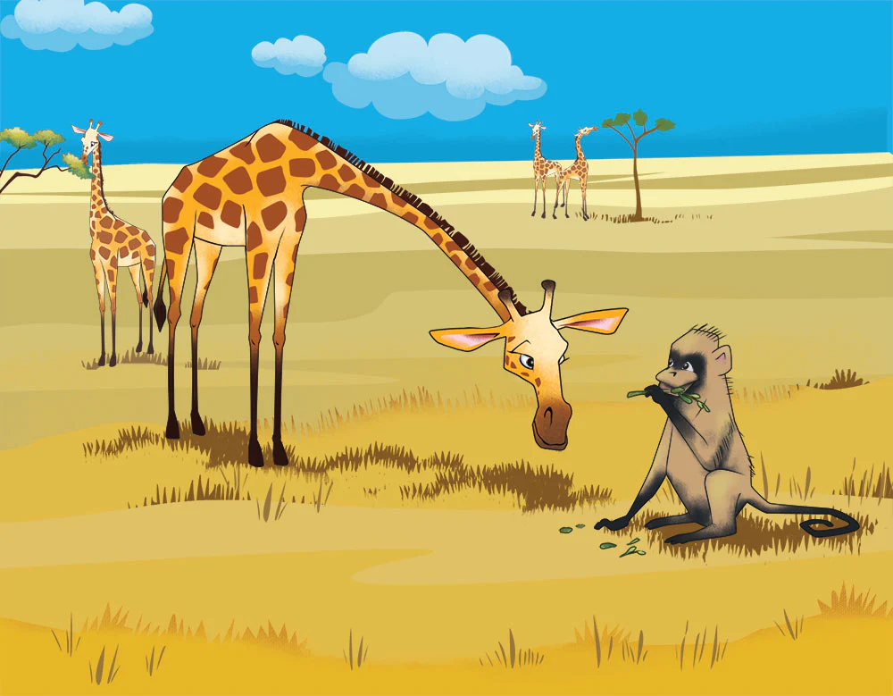
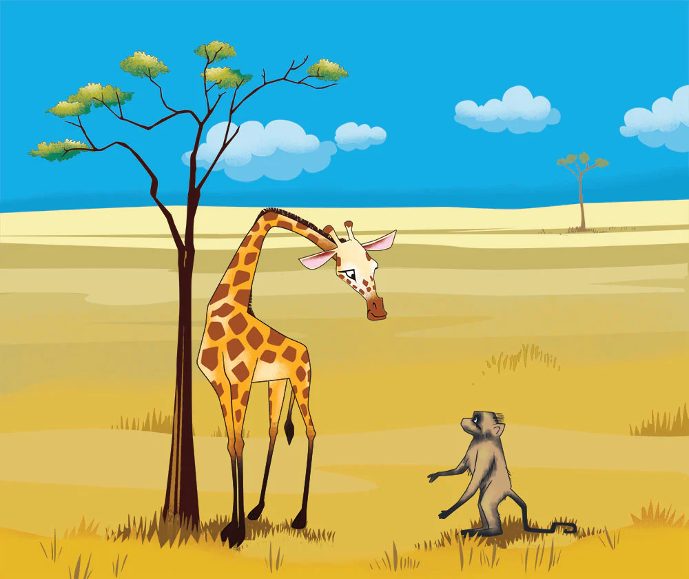
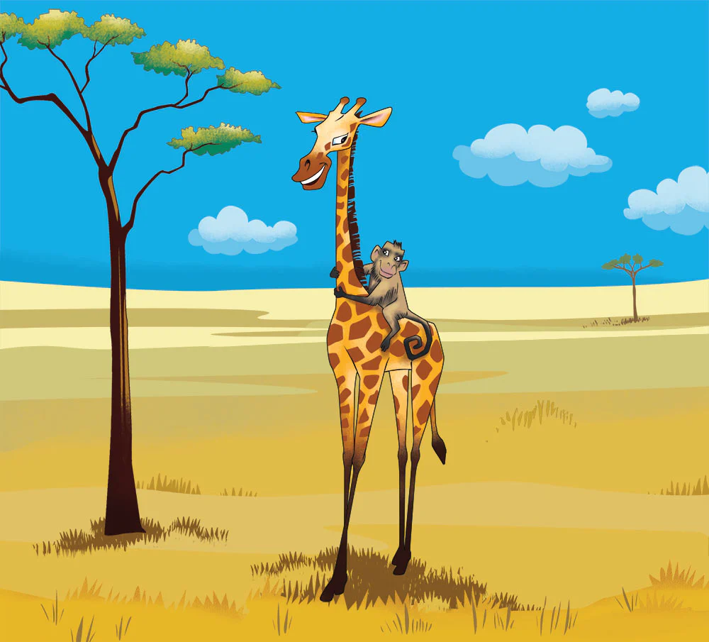
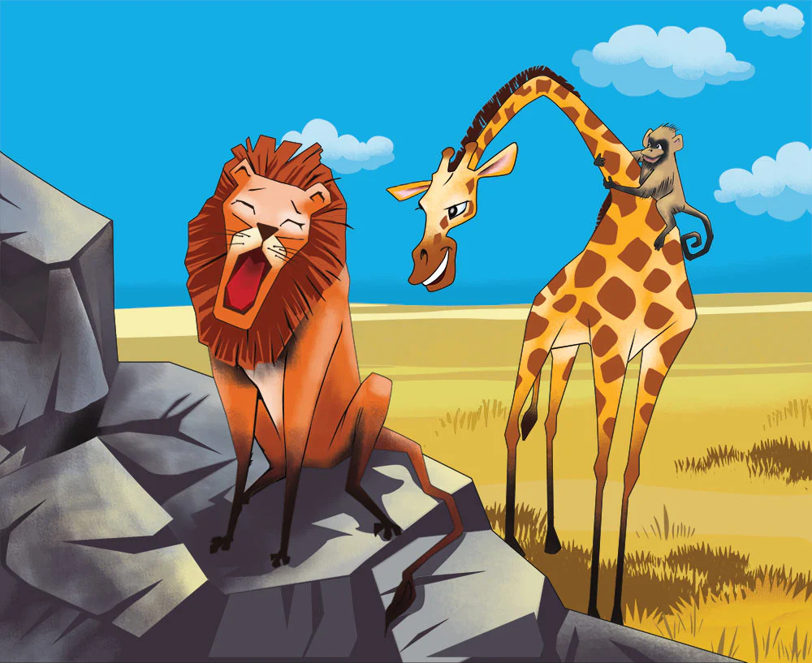
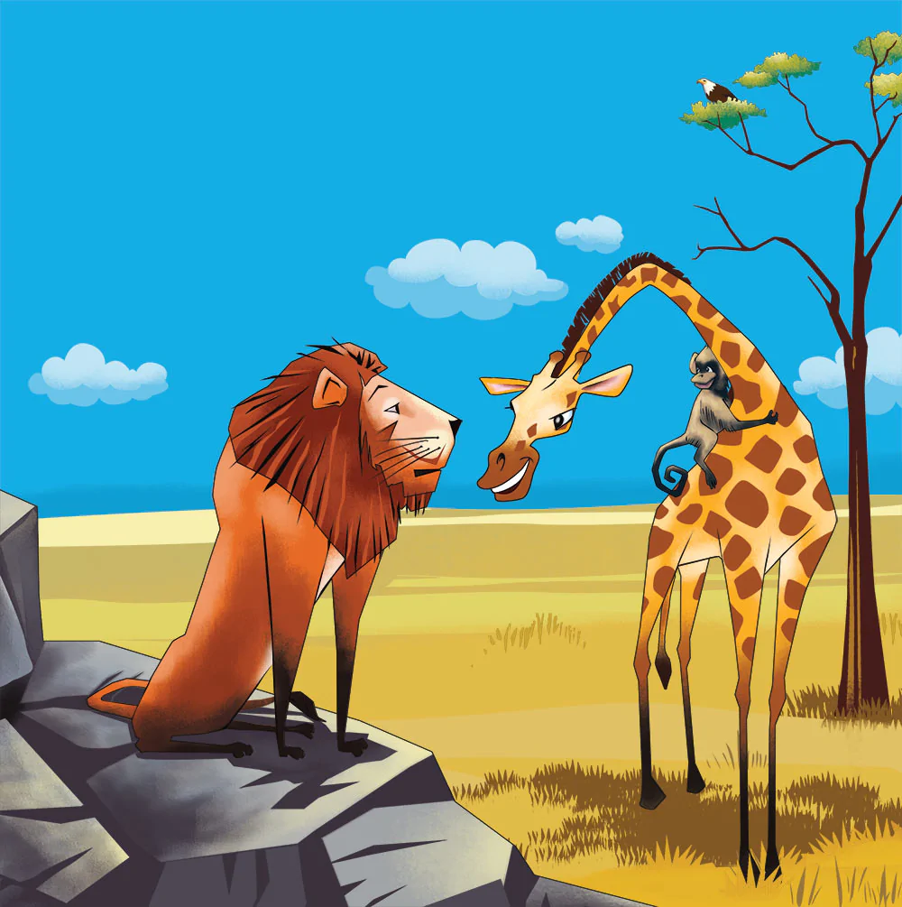
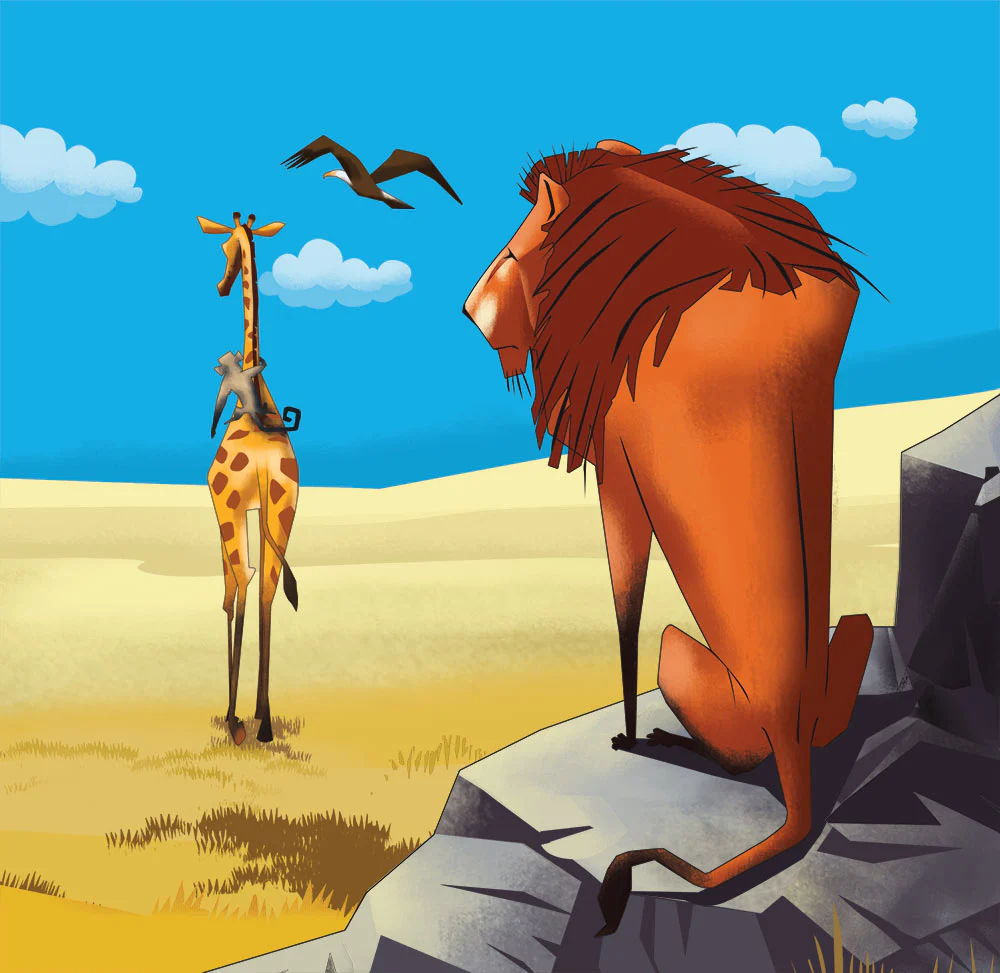
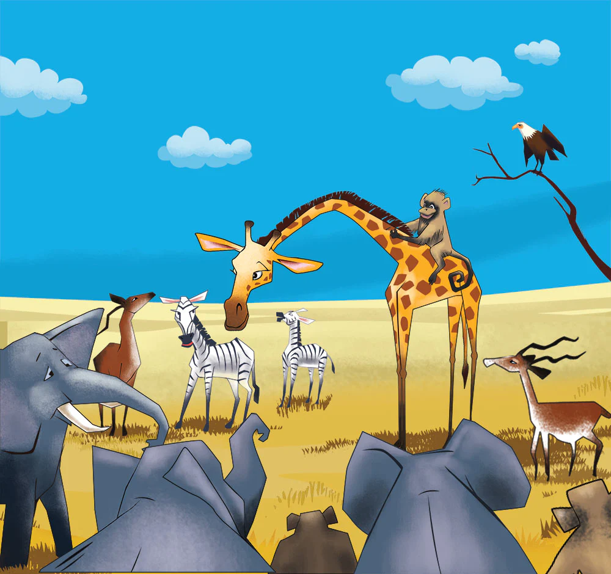
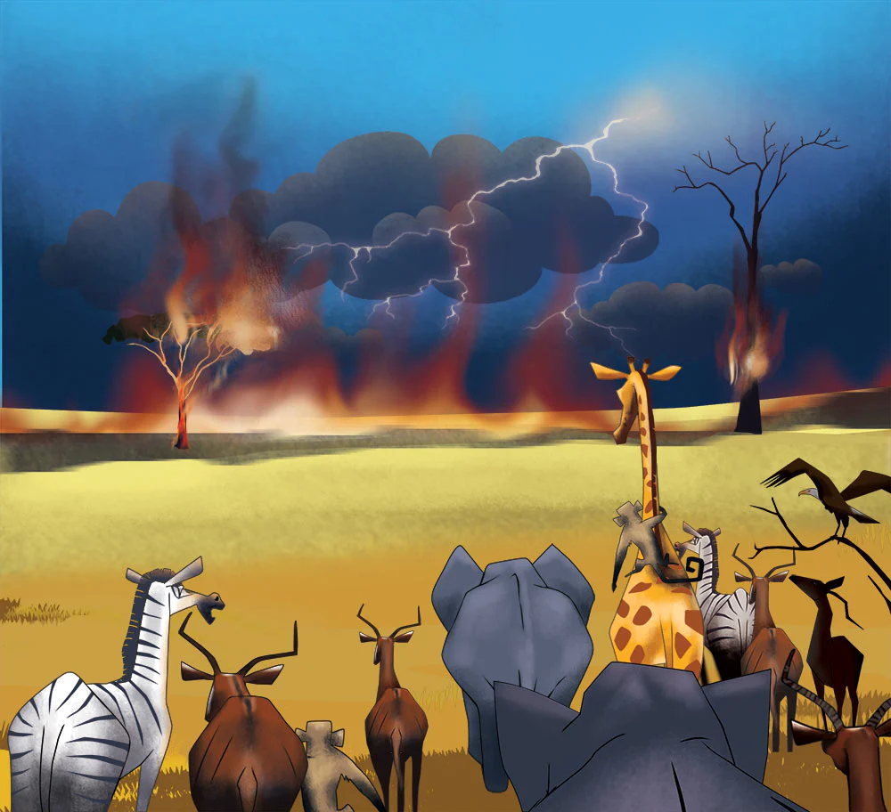
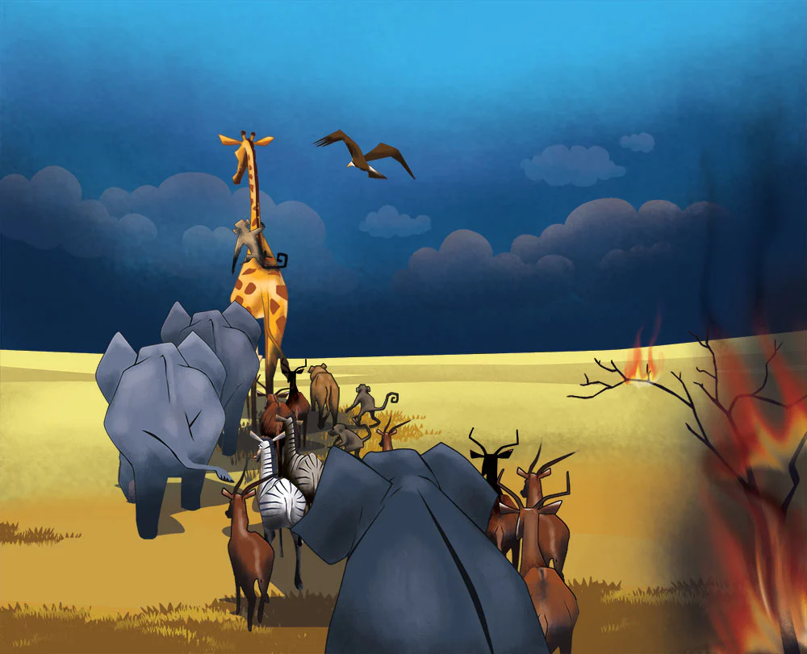
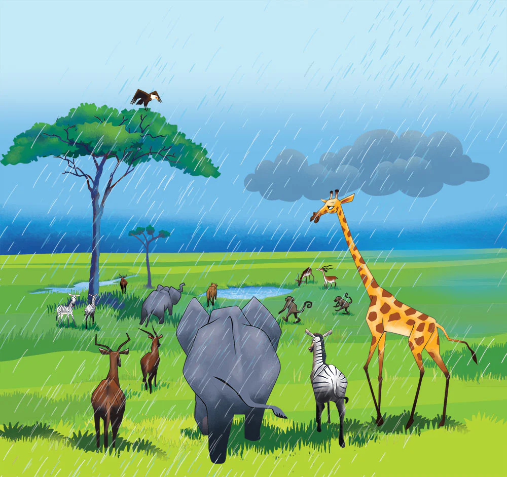

[1] [2] [3] [4] [5] [6] [7] [8] [9] [10] [11} [12]
[1] Once upon a time, there was a giraffe named Ginger. Ginger lived in Kenya, a country in Africa. Like all giraffes, Ginger had a long neck and long legs. Because she was so tall, she was able to eat food from the very tops of the trees in the savannah. The savannah in Africa is an area with lots of grass and some trees. Sometimes, a savannah is called grasslands. The other animals like zebras and antelopes could not reach where Ginger could reach. But Ginger always found food. She loved the leaves and the new buds of the trees.

[2] One day, Ginger was busy eating her favorite leaves along with some other giraffes. It was a bright sunny day and there was not a cloud in the sky. It had not rained for a long time, so the grass was very dry. She heard a noise down at the bottom of her extra long legs: it was her friend, Mickey the Monkey. Mickey was trying to say something, but Ginger couldn’t understand what he was saying. He looked very tired. “What’s wrong?” asked Ginger. Ginger was a very kind giraffe and wanted to help everyone. Just then Mickey fell over!
[3] Ginger was also a smart giraffe. She knew what was wrong. Mickey couldn’t find anything to eat and he was very hungry. Ginger nibbled some fresh, tender leaves and buds from the top of the tree where she was eating. She dropped some of the leaves and buds to the ground near where Mickey was. Then she nudged him a little with the hoof at the bottom of one of her very long legs. “Wake up, Mickey!” said Ginger. “I’ve found something for you to eat.” Slowly Mickey sat up and ate a little.
[4] After a while, when Mickey was feeling better, Ginger asked him, “What’s happened, Mickey? Why are you so hungry? Why can’t you find anything to eat?” Mickey said, “It hasn’t rained for so long and now there’s no more food.” “That’s not good,” said Ginger. “What’s happening with the other animals?” “No one knows what to do,” answered Mickey. “All the zebras and the antelopes and the elephants are getting worried about the dry grass. Some of them are thinking about leaving the savannah and trying to reach the jungle.” “That’s a long trip,” said Ginger. “Are you going to go with them?”
[5] “I don’t know,” answered Mickey. “What do you think we should do?” Ginger thought for a while and then suddenly, she had a good idea. “We should go talk to Leo the Lion. He is the smartest animal in the savannah!” Mickey was too tired to walk, so Ginger invited him to ride on her back. “Hold on tight to my neck,” said Ginger. “There’s a lot to hold on to,” joked Mickey. Ginger laughed. “You’re right. I’ve got the longest neck in Africa!” So they started their journey across to the other side of the savannah to look for Leo.
[6] Ginger and Mickey were in luck! Leo was sitting up on a rock and he was really easy to see as they walked through the grass. “Hi, Leo!” they both shouted. Leo had been napping and was a little grumpy when they woke him up. But he was polite and said, “Hello Ginger and Mickey. Why did you walk the whole way across the savannah? Just to wake me up?” But he was joking; he had a smile on his face. “Mickey says that there is no food left on the savannah because it’s been so dry,” said Ginger. “Do you have any ideas?”
[7] Leo thought for a while. He said, “There’s nothing we can do about the rain. It will come soon, but we can’t be sure when it will arrive. When the rain comes, all the plants will grow again and there will be lots of food for everybody.” He thought a little longer. “The only thing I can think of is for everyone to move closer to the forest,” he continued. “There will be more things to eat there, but I know it’s a long trip and it will not be very easy. It might take days to get there.”
[8] Ginger and Mickey looked at each other and then looked back at Leo. “Thank you, Leo,” said Ginger. “It’s probably best if they all try to get closer to the jungle.” They said goodbye and then walked back across the savannah. Now they needed to gather all of the animals together to start the long journey. Ginger didn’t need to go along because she had plenty of food in her high trees. But she was a good friend and wanted to help as much as she could. They walked towards her favorite trees and guess what she and Mickey saw?
[9] All of the animals were already gathered there and waiting for Ginger and Mickey! “Why are you all here?” asked Ginger. “Eddie the Eagle told us that you’re taking us to the edge of the jungle,” said one of the zebras. “How did he know?” asked Mickey. “He heard you talking with Leo,” said one of the antelopes. “So you’ve all decided to try to walk together to the jungle?” asked Ginger. “Yes,” they all answered. “If you’ll help us to get there,” added one of the elephants. “Of course, I’ll help,” said Ginger. “I’m your friend.”
[10] So they started on their big journey across the savannah to the jungle. The sun was so hot and there was no food and no place to get a drink of water. And then they heard it. It was thunder! “Thunder!” they all shouted. Thunder was very scary to the animals of the savannah. Can you guess why? Fire! Sometimes the lightning hits the dry grass and the whole savannah catches fire. Then everyone has to run. And that is exactly what happened. “Fire!” they shouted. They could smell it. And now they could see it. The fire was coming towards them!
[11] Ginger had to think fast. Because she was so tall she could see farther than any of the other animals. She stretched her long neck up as far as she could. Now she could see a place where there was no fire. “Quick!” she said. “Everyone run this way.” All of the animals followed her and ran as fast as they could. Soon, they were out of danger. They stopped and gathered together one more time. “Is everyone here?” Ginger asked. She wanted to make sure they were all safe.
[12] And then the most wonderful thing happened. “I felt a drop,” said a zebra. “Me too,” said an antelope. It was rain! Finally! Everyone was very happy. It started to rain a little more and then a little more. The rain put out the fire so they didn’t have to run. And the rain filled their watering holes and made the plants grow again, so they didn’t have to make that long trip to the edge of the jungle. Everyone would soon have enough food and water. So Ginger, the Giraffe went back to her favorite tree and continued to munch on the leaves and buds.